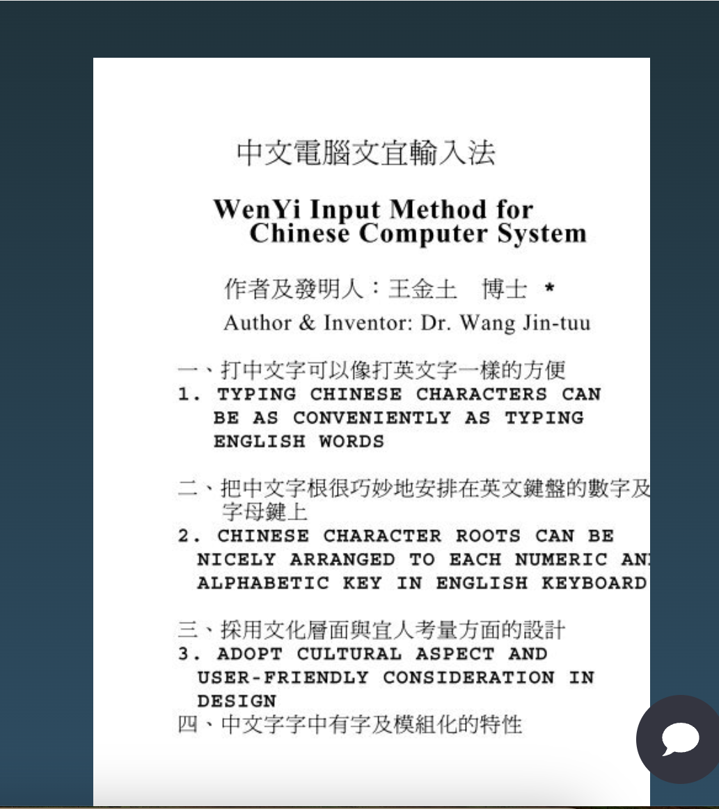

從臺大電機出發
畢業於國立臺灣大學電機系。四十年後，他寫下同學重聚的記憶，珍惜同窗情誼，也關心大家的健康與往後的人生。[2]
緣起 · 家人的記憶
一部談論繁體中文與人工智慧的影片，讓家人再次想起父親，也想起那套名為「文宜」的輸入法。
在家人的記憶裡，他堅持繁體中文的傳統，希望科技能順應人們熟悉的書寫方式。然而，理想未能獲得足夠的資金支持，最終留下未竟的心願。
這份紀念，從他的文字、公開史料與家人的追念開始。留下的不只是遺憾，也是一個人曾經認真為中文思考的證明。
本段依家屬口述整理；資金困境與未竟心願屬家族記憶。
01 ／ 一生 · 從電信到文字
王金土博士曾任中華電信研究所所長、中華電信副總經理，亦投入退休同人的服務與電信歷史的保存。[3]
畢業於國立臺灣大學電機系。四十年後，他寫下同學重聚的記憶，珍惜同窗情誼，也關心大家的健康與往後的人生。[2]
公開史料記載，他曾任中華電信研究所所長、副總經理及台灣國際標準電子公司董事長；並撰文提出成立中華電信博物館的構想，希望留下電信發展對社會的貢獻。[3]
在文宜輸入法的前言裡，他提到累積二十多年中文電腦經驗，並請益文字學研究者，希望降低一般人使用中文電腦的門檻。[1]
在《電信退休同人通訊》的署名文章中，他談到會員福利、資訊交流與終身學習，並提出以委員會分工，讓退休同仁一起參與服務。[4]
家屬已確認此處的電信界王金土先生即為父親。生卒日期未獲確認，暫不刊載；網頁上架日期不作為生平事件日期。
02 ／ 一字 · 文化及宜人
文宜輸入法的出發點，是讓熟悉中文字的人，更容易把文字帶進電腦。[1]

《中文電腦文宜輸入法》說明文件，頁面署名「作者及發明人：王金土 博士」。家屬提供的閱讀畫面截圖，保留原貌；部分文字於截圖邊緣截斷。點圖可開啟大圖。
閱讀原文件 ↗家屬史料補記
家屬提供的生平事略記載，王金土先生曾自創中文字「先筆劃後部首」編碼法、「簡便靈活之輸入法」，以及「中文電腦文化與宜人輸入法」。這段記錄補足了文宜輸入法的研發脈絡：他長期思考中文字如何編碼、輸入，以及如何讓電腦工具更貼近中文使用者。[8]
利用中文字根與英文字母外形的相似性，幫助使用者記住鍵位，減少死背的負擔。
發明人的說明強調中文字「字中有字」及模組化特性，把字根安排到英文鍵盤的數字與字母鍵上。
「文化」與「宜人」並列：輸入工具除了能運作，也要考慮文字的特性與學習者的需要。
03 ／ 未來 · 字與人工智慧
父親當年關心的，是中文如何進入電腦；今天延續的提問，是科技如何更好地理解中文。
觸發這份紀念的影片
島上敘事的影片以「繁體字能否成為 AI 的王牌」為題。家人從中看見繁體中文與人工智慧結合的希望，也想起父親對中文輸入的投入。
前往 YouTube 觀看 ↗目前無法取得此片逐字稿；這是根據已確認的片名與家屬觀後感整理的主題導讀，並非完整影片摘要。
跨越年代的提問
文宜輸入法把人們書寫繁體中文時熟悉的筆順、字根、部件與文化結構，轉換成電腦可以處理的規則。今日的人工智慧研究，也在探索如何把漢字的字形、部件、筆畫及讀音，轉化為模型可以學習的資訊。
兩者之間沒有已知的直接技術傳承，面對的卻是相通的問題：電腦是否只能把漢字當成代碼，還是能進一步認識文字結構所承載的線索？
與研究對話
ChineseBERT 將漢字字形與拼音納入中文語言模型；後續研究也嘗試讓模型學習字元以下的結構，而不是把每個漢字視為不可分割的符號。這些成果支持「中文的字形與聲音值得納入模型設計」這個方向。[7][9]
不過，字根與部件只是理解中文的一層線索。完整意義仍來自詞語、上下文、語法、歷史與實際用法。近期研究也指出，現有模型對部首、組字方式與筆畫的掌握仍有限，不合適的文字切分還可能遮蔽部件帶來的資訊。[10][11]
如果當年已有 AI
人工智慧或許能協助整理字庫、辨認字根、容許筆順差異、修正輸入，並依照使用者的習慣預測文字；也能把手寫辨識、鍵盤字根與上下文選字連接起來。這些工具可能讓文宜輸入法更容易完成、展示與被理解。
然而，資金、平台標準、通路與產業力量仍會影響一項發明能否走進大眾。AI 未必能改變歷史，卻讓我們在今天重新看見：王金土先生當年提出的問題，並沒有過時。
「遭受排擠、失去發展機會及晚年留下遺憾」為家屬對父親經歷與心境的記憶；本頁不將其寫成已由外部文件證實的歷史定論。
他早年選擇從繁體中文的傳統書寫方式出發，把筆順與字根化為人與電腦溝通的橋梁。數十年後，人工智慧研究重新把字形、部件與筆畫納入中文模型。這不是證明他預見了 AI，而是讓我們看見：他當年堅持探索的問題，今天仍在科技的前沿被繼續回答。
給父親的話
願您在天上，
看見今日 AI 的發展，
能露出一個
會心的微笑。
您未竟的心願，我們記得。
您為文字付出的心力，也值得被記得。
04 ／ 留存 · 資料與出處
公開資料提供歷史的輪廓，家人的話語保存個人的心意。兩者在此並列，也各自標明來處。
王金土署名文稿，家屬提供的 Book118 轉載連結。可見前言介紹命名、研發經驗與設計方向；未取得全文，不以轉載年份推定發明年份。
王金土署名文章，記述 2000 年同學會；網站於 2013 年刊載。可確認 1960 年畢業與文章當時的職銜。
附錄〈建議成立「中華電信博物館」之構想〉署名王金土，列出歷任職務，記錄其電信文化保存理念。
〈理事長想做的事〉，王金土署名。提供其退休後服務會員、推動學習與資訊交流的紀錄。
Yumpu 轉載，文件署名作者及發明人 Dr. Wang Jin-tuu。介紹文化、宜人、字根與鍵盤配置等設計理念。
家屬提供的影片。已確認片名與頻道；未取得逐字稿，影片內個別歷史或技術主張尚未逐項查核。
Sun 等人：Chinese Pretraining Enhanced by Glyph and Pinyin Information。作為字形與語言模型結合的研究實例，不作為繁簡優劣或文宜技術傳承的證明。
王公金土先生治喪委員會謹述，家屬提供全文。本頁僅採用其中與中文輸入研究相關的紀錄；出生、病史、家屬姓名與後代任職等私人內容均不公開，原始 Facebook 連結亦不刊載。
研究中文字元以下的字形與讀音資訊如何用於語言模型，作為「漢字並非只能被視為不可分割代碼」的研究例證。
檢視大型模型辨認及運用部首、組字方式與筆畫等視覺資訊的能力，研究顯示目前模型仍有明顯限制。
研究顯示文字切分方式可能影響中文字符表徵，也說明部件資訊不會自然、完整地被所有模型保留。
生卒日期、文宜輸入法確切研發與發表年份、專利或軟體版本、完整字根規則及資金往來文件，目前尚待原始資料確認。另查到〈王金土博士之生平事蹟〉轉載頁，可作求學經歷的進一步查證線索；未將尚未核對的細節寫入年表。
生平文稿轉載線索 ↗本頁依家屬授權公開。未以生成肖像代替真人照片，亦未將紀念文字寫成王金土先生的原話。